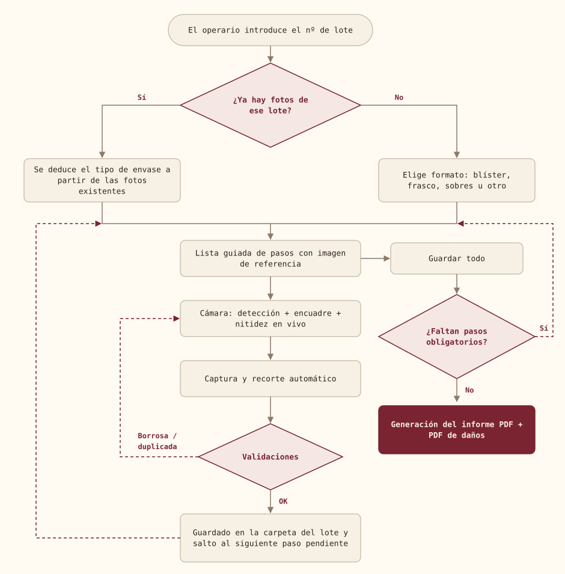

Proyecto desarrollado en un entorno profesional. Por confidencialidad se omiten el nombre de la empresa, de los sistemas internos, rutas, datos de producto y cualquier información de negocio. Los fragmentos de código de este post son versiones simplificadas y reescritas para ilustrar las técnicas, no el código original.
El problema
En un entorno industrial regulado, cada lote de producción necesita un registro fotográfico de una muestra del producto: todas las caras del envase, el braille, el envase primario, la zona donde aparecen el lote y la caducidad, posibles daños, etc. Ese registro acaba en un informe PDF que forma parte de la documentación de calidad.
El proceso manual tenía varios problemas:
- Fotos movidas o desenfocadas que se descubrían demasiado tarde.
- Fotos repetidas (la misma cara guardada en dos pasos distintos).
- Pasos olvidados.
- Un PDF montado a mano, lento de preparar y sin una estructura homogénea.
El objetivo fue construir, dentro de una aplicación web móvil existente, un asistente guiado que se usa desde terminales Android y que valida cada foto en el momento de hacerla y genera el informe de forma automática.
Stack
| Capa | Tecnología |
|---|---|
| Backend | PHP · Symfony · Twig |
| Visión en el navegador | TensorFlow.js + COCO-SSD, OpenCV.js |
| Recorte | Cropper.js |
| Cámara | getUserMedia + MediaStreamTrack constraints |
| Imagen en servidor | GD |
| TCPDF (con código Data Matrix) |
Todo el análisis de imagen se ejecuta en el propio dispositivo, en el navegador: no hay un servicio de IA externo ni se envían fotos a terceros.
Flujo general

- Inicio de sesión de captura. El operario introduce el número de lote. Si la carpeta de ese lote ya contiene fotos, la aplicación deduce el tipo de envase a partir de los nombres de los pasos guardados (hay vistas que solo existen en frascos, por ejemplo) y retoma la sesión donde se quedó.
- Pasos guiados. Cada formato tiene su lista de pasos, cada uno con una imagen de referencia que indica qué hay que fotografiar. Los pasos ya completados se marcan en verde, y se pueden añadir pasos personalizados con «+».
- Cámara. Al guardar una foto válida, la cámara salta automáticamente al siguiente paso pendiente.
- Guardar todo. Comprueba que estén todos los pasos obligatorios y genera el informe.
La detección de imagen
La pantalla de cámara ejecuta un bucle con requestAnimationFrame que analiza cada fotograma y da feedback visual inmediato: un recuadro verde (bien encuadrado y nítido), naranja (objeto fuera del marco) o rojo (imagen borrosa).
1. Detección del objeto
Se usa COCO-SSD sobre TensorFlow.js para localizar el objeto principal del fotograma. Me quedo con la primera predicción con confianza > 0.5, valido que la bounding box sea coherente con el tamaño del vídeo y compruebo si queda dentro del marco de referencia que se dibuja en pantalla.
Sobre esa región, OpenCV.js refina el contorno: escala de grises → desenfoque gaussiano → Canny → cierre morfológico → findContours, quedándome con el contorno de mayor área.
2. Nitidez: varianza del Laplaciano
Para decidir si una foto está desenfocada uso la varianza del Laplaciano. El Laplaciano es una segunda derivada: en una imagen nítida hay muchos bordes fuertes y sus valores están muy dispersos (varianza alta); en una imagen borrosa los bordes se suavizan y el Laplaciano se queda cerca de 0 (varianza baja).
// Versión simplificada
function sharpnessScore(canvas) {
const src = cv.imread(canvas);
const gray = new cv.Mat(), lap = new cv.Mat();
const mean = new cv.Mat(), std = new cv.Mat();
try {
cv.cvtColor(src, gray, cv.COLOR_RGBA2GRAY);
cv.GaussianBlur(gray, gray, new cv.Size(3, 3), 0); // reduce el ruido del sensor
cv.Laplacian(gray, lap, cv.CV_64F);
cv.meanStdDev(lap, mean, std);
return std.data64F[0] ** 2; // varianza = σ²
} finally {
[src, gray, lap, mean, std].forEach(m => m.delete()); // OpenCV.js no tiene GC
}
}Decisiones de diseño:
- Dos umbrales. Uno en vivo, sobre cada fotograma, que solo orienta al usuario; y otro, bloqueante, sobre la foto final ya recortada, reescalada a un tamaño fijo para que la puntuación no dependa de la resolución.
- Excepciones por paso. Algunas vistas no contienen información legible (por ejemplo, la base de un frasco) y no se bloquean nunca; en los pasos con texto muy pequeño o ángulos difíciles el usuario puede forzar el guardado tras un aviso.
- Calibración en dispositivo real. Los umbrales se ajustaron en varias iteraciones con los terminales de producción: demasiado estrictos bloqueaban fotos válidas, demasiado laxos dejaban pasar fotos inútiles.
3. Zoom para texto pequeño
En los pasos donde hay que leer lote y caducidad intento usar el zoom óptico/hardware mediante track.applyConstraints({ advanced: [{ zoom }] }). No todos los dispositivos lo soportan, así que hay un fallback de zoom digital: se escala la vista previa con CSS y, al capturar, se recorta la misma región central del fotograma y se reescala, de modo que la foto guardada coincide exactamente con lo que el usuario veía.
4. Recorte asistido
Tras la captura, Cropper.js se abre con el recuadro ya colocado sobre la bounding box detectada, así que en la mayoría de los casos basta con confirmar.
5. Detección de duplicados en dos niveles
- En el cliente (similitud visual): comparo la nueva foto con las ya guardadas usando ORB (puntos clave + descriptores binarios),
BFMatchercon distancia de Hamming y el ratio test de Lowe. Como la misma cara del envase puede fotografiarse girada, pruebo también la imagen volteada horizontal y verticalmente y me quedo con la mejor coincidencia. Si se parece demasiado a otra, se avisa al usuario indicando a qué paso se parece.
// Ratio test de Lowe: una coincidencia es "buena" si es claramente
// mejor que la segunda candidata
bf.knnMatch(desc1, desc2, knn, 2);
let good = 0;
for (let i = 0; i < knn.size(); i++) {
const [m, n] = [knn.get(i).get(0), knn.get(i).get(1)];
if (m.distance < 0.75 * n.distance) good++;
}
const difference = 1 - good / Math.max(kp1.size(), kp2.size());- En el servidor (duplicado exacto): un hash SHA-256 de los bytes, con un prefiltro por tamaño de fichero para no leer de la unidad de red todas las fotos. Este control sí es bloqueante.
6. Trazabilidad sin ficheros adicionales
Para saber quién hizo cada foto no uso una base de datos ni ficheros auxiliares: el nombre del operario se escribe dentro del propio PNG, en un chunk tEXt insertado justo después de la cabecera IHDR. Al calcular el hash de duplicados ese chunk se elimina antes, para comparar solo el contenido de la imagen.
// Inserta un chunk tEXt "Operator" tras IHDR (simplificado)
$data = "Operator\0" . $operator;
$chunk = pack('N', strlen($data)) . 'tEXt' . $data . pack('N', crc32('tEXt' . $data));
$png = substr($png, 0, 33) . $chunk . substr($png, 33); // 8 (firma) + 25 (IHDR)La generación (y regeneración) del PDF
Al pulsar «Guardar todo» el servidor reconstruye el informe a partir de la carpeta del lote, que es la única fuente de verdad. Cada generación crea un fichero nuevo con marca de tiempo, así que se puede regenerar tantas veces como haga falta (por ejemplo, tras repetir una foto) sin perder las versiones anteriores.
1. Validación
Se calculan los pasos del formato más los personalizados, se separan los obligatorios de los opcionales y, si falta alguno obligatorio, se devuelve la lista exacta para que el operario sepa qué le queda.
2. Clasificación de las fotos
- Las fotos de daños no van al informe principal: se generan en un PDF independiente. Si en una regeneración ya no hay fotos de daños, el PDF antiguo se elimina para que nunca muestre fotos que ya se borraron.
- Las fotos de origen que ya existían en la carpeta (subidas por otros medios y con nombres no estandarizados) se detectan por nombre y se insertan en su posición lógica, numeradas.
3. Extraer fotos de PDFs escaneados, en PHP puro
Algunas de esas fotos de origen llegaban como PDF escaneado. Para no depender de Imagick ni Ghostscript en el servidor, escribí un pequeño extractor que recorre los objetos del PDF y recorta directamente los streams JPEG (/Filter /DCTDecode, también envueltos en FlateDecode):
- Descarta imágenes pequeñas (logos, iconos), ficheros cifrados o demasiado grandes y duplicados (hash MD5 del stream).
- Lee el
/Rotatede la página que contiene cada imagen (incluido el heredado del árbol de páginas) para dibujarla en el informe tal como la mostraría un visor de PDF.
4. Recorte automático del fondo del escáner
Los escaneos de un producto traen la tapa negra del escáner como fondo. Para recortarla:
- Muestreo la imagen en una rejilla y calculo el color de fondo como la mediana de cada canal.
- Si el fondo no es oscuro y uniforme, no toco la imagen (puede ser un documento o una foto normal).
- Marco como «objeto» las muestras cuya distancia al fondo supera un umbral, y solo cuento las que tienen al menos 5 vecinos también de objeto, para ignorar el polvo y la línea que algunos escáneres dibujan en el borde.
- Calculo la caja envolvente, añado un margen proporcional y descarto recortes absurdos (casi toda la imagen o casi nada).
5. Optimización de tamaño y memoria
Las fotos se guardan como PNG a resolución completa (varios MB cada una). Para el informe se generan JPEG temporales reducidos, que se eliminan al terminar: el PDF pesa una fracción y se genera más rápido, y los originales quedan intactos.
Un detalle importante: en PHP, quedarse sin memoria dentro de GD es un error fatal que no se puede capturar. Por eso, antes de decodificar cada imagen estimo la memoria necesaria (ancho × alto × 4 bytes + margen), intento ampliar el límite y, si no es posible, me salto la optimización en lugar de tumbar la petición.
6. Estructura del informe
- Portada con los metadatos del lote (obtenidos del sistema de producción), quién hizo las fotos, quién y cuándo generó el informe, número total de fotos y un código Data Matrix con el número de lote.
- Checklist visual: páginas con una cuadrícula de 3×3 miniaturas, cada una con el nombre del paso, fecha de captura y autor.
- Detalle: dos fotos por página A4, con un tamaño distinto para fotos verticales y horizontales para aprovechar el espacio sin que ninguna parezca diminuta.
Los errores secundarios (por ejemplo, que no se pueda generar el PDF de daños o extraer fotos de un escaneado) se devuelven como avisos, sin invalidar el informe principal.
Retos y aprendizajes
- Gestión manual de memoria en OpenCV.js. Cada
cv.Matvive en el heap de WebAssembly y hay que liberarlo explícitamente; en un bucle por fotograma una fuga se nota en segundos. - Calibrar con hardware real. Los umbrales de nitidez y el comportamiento de la cámara cambian mucho entre el portátil de desarrollo y un terminal industrial; hubo que ajustarlos varias veces en planta.
- Robustez ante el entorno. Antes de crear carpetas compruebo que la unidad de red está montada, para no escribir por error en el disco local; y cada usuario trabaja sobre la carpeta guardada en su sesión, de modo que dos operarios con lotes distintos nunca se pisan.
- Elegir la librería de PDF adecuada. Migré la generación a TCPDF para tener soporte nativo de códigos 2D y más control sobre la maquetación.
- Menos dependencias, más control. Extraer imágenes de un PDF en PHP puro fue más trabajo que instalar una herramienta, pero evitó dependencias de sistema en un servidor sobre el que no tenía control total.
Resultado
- Captura guiada paso a paso, con feedback en tiempo real de encuadre y nitidez.
- Bloqueo de fotos borrosas y de duplicados antes de que lleguen al informe.
- Trazabilidad del autor de cada foto embebida en la propia imagen.
- Informe PDF homogéneo generado en un clic, regenerable y versionado, con PDF separado para incidencias.
Tecnologías: PHP, Symfony, JavaScript, TensorFlow.js, COCO-SSD, OpenCV.js, Cropper.js, GD, TCPDF.